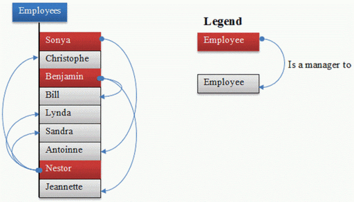

Вопрос 1: SQL-запрос, чтобы найти вторую самую высокую зарплату работника?
Ответ: Есть много способов найти вторую самую высокую зарплату работника в SQL, вы можете использовать в SQL объединение или подзапрос, чтобы решить эту проблему. Вот SQL-запрос с использованием подзапроса:
SELECT MAX(Salary) from Employee
WHERE Salary NOT IN (select MAX(Salary) from Employee );
Вопрос 2: SQL-запрос, чтобы найти максимальную зарплату от каждого отдела.
Ответ: Вы можете найти максимальную зарплату для каждого отдела, группируя все записи по DeptId, а затем с помощью функции MAX(), чтобы вычислить максимальную зарплату в каждой группе или каждого отдела.
SELECT DeptID, MAX(Salary) FROM Employee GROUP BY DeptID.
Эти вопросы становятся более интересными, если Интервьюер попросит вас напечатать название отдела вместо отдела ID, в этом случае, вам нужно соединить таблицу Employee с Department с использованием внешнего ключа DeptID, убедитесь, что вы используете LEFT or RIGHT OUTER JOIN включая отделов без каких – либо сотрудников. Вот запрос:
SELECT DeptName, MAX(Salary) FROM Employee e
RIGHT JOIN Department d ON e.DeptId = d.DeptID
GROUP BY DeptName;
В этом запросе мы использовали RIGHT OUTER JOIN, потому что нам нужно название отдела из таблицы Department, который находится на правой стороне JOIN, даже если нет никакого упоминания о dept_id в таблице сотрудников.
Вопрос 3: Написать SQL – запрос для отображения текущей даты.
Ответ: SQL имеет встроенную функцию под названием GetDate(), которая возвращает текущую временную метку. Это будет работать в Microsoft SQL Server, другие производители, такие как Oracle и MySQL также имеет эквивалентные функции.
SELECT GetDate();
Вопрос 4: Напишите SQL запрос, чтобы проверить дату в передаваемом запросе, является ли дата данного формата или нет.
Ответ: SQL имеет функцию IsDate(), которая используется для проверки переданное значение, является дата или не указанного формата, он возвращает 1 (истина) или 0 (ложь), соответственно. Помните IsDate() является функцией MSSQL и он может не работать на Oracle, MySQL или любой другой базе данных, но не было бы что – то подобное.
SELECT ISDATE('1/08/13') AS "MM/DD/YY";
Она возвращает 0, потому что дата не в правильном формате.
Вопрос 5: Напишите SQL запрос, чтобы напечатать имя отдельного работника у которого поле DOB составляет от 01/02/1965 до 31/11/1970.
Ответ: Этот SQL-запрос является сложным, но вы можете использовать BETWEEN, чтобы получить все записи, у которых дата падеет между двумя датами.
SELECT DISTINCT EmpName FROM Employees
WHERE DOB BETWEEN ‘01/02/1965’ AND ‘31/11/1970’;
Вопрос 6: написать SQL запрос, где найти количество сотрудников в зависимости от пола , чье поле DOB между 01/02/1965 до 31/11/1970.
Ответ:
SELECT COUNT(*), sex from Employees
WHERE DOB BETWEEN '01/02/1965' AND '31/11/1970'
GROUP BY sex;
Вопрос 7: Напишите SQL запрос, чтобы найти сотрудника, чья зарплата равна или превышает 20000.
Ответ:
SELECT EmpName FROM Employees WHERE Salary>=20000;
Вопрос 8: Напишите SQL запрос, чтобы найти имя сотрудника, чье имя начинается с ‘M’
Ответ:
SELECT * FROM Employees WHERE EmpName like 'M%';
Вопрос 9: Найти все записи о сотрудниках, содержащие слово “Роман”, независимо от того, был ли он, как РОМАН, Роман, или роман.
Ответ:
SELECT * from Employees WHERE UPPER(EmpName) like '%РОМАН%';
Вопрос 10: Напишите SQL запрос, чтобы найти год от даты.
Ответ: Вот как вы можете найти год от даты в SQL Server 2008.
SELECT YEAR(GETDATE()) as "Год";
Вопрос 11: Написать SQL – запрос для поиска дубликатов строк в базе данных? а затем написать SQL запрос, чтобы удалить их?
Ответ: Вы можете использовать следующий запрос для выбора различных записей:
SELECT * FROM emp a
WHERE rowid = (SELECT MAX(rowid)
FROM EMP b WHERE a.empno = b.empno);
удалить:
DELETE FROM emp a
WHERE rowid != (SELECT MAX(rowid)
FROM emp b WHERE a.empno = b.empno);
Вопрос 12: Существует таблица, которая содержит два столбца Student и Marks, вам нужно найти всех студентов, чьи оценки являются больше, чем средние оценки, т.е. список студентов выше среднего.
Ответ: Этот запрос можно записать с помощью подзапросов, как показано ниже:
SELECT student, marks
FROM table where marks > (SELECT AVG(marks) from table);
Вопрос 13: Как найти всех сотрудников, которые являются менеджерами?
Cтандартная таблица сотрудников с дополнительной колонкой mgr_id , которая содержит идентификатор сотрудника менеджера:

Ответ: Вы должны знать о автообъединении, чтобы решить эту проблему. В автообъединение, вы можете присоединиться два экземпляра одной и той же таблицы, чтобы выяснить дополнительные подробности, как показано ниже:
SELECT e.name, m.name FROM Employee e, Employee m
WHERE e.mgr_id = m.emp_id;
Чтобы найти сотрудников, которые не имеют статус менеджера, просто используйте left outer join, он также будет включать сотрудников без менеджеров.
Вопрос 14: У вас есть композитный индекс из трех колонок, как вы обеспечиваете значение двух столбцов в WHERE на выборку? Будет ли индекс использоваться для этой операции?
Ответ: Например, если индекс находится на EmpId, EmpFirstName и EmpSecondName и вы пишете запрос типа:
SELECT * FROM Employee
WHERE EmpId=2 and EmpFirstName='Radhe'
Если данные в две колонки являются вторичными индексами столбца, то индекс не будет ссылаться, но если данные 2 колонок содержат первичный индекс (первый столбец при создании индекса), то индекс будет ссылаться. В этом случае индекс будет использоваться, поскольку EmpId и EmpFirstName являются первичные столбцы.